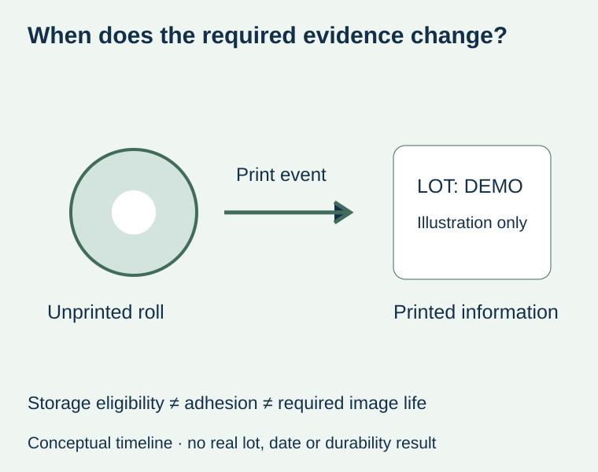
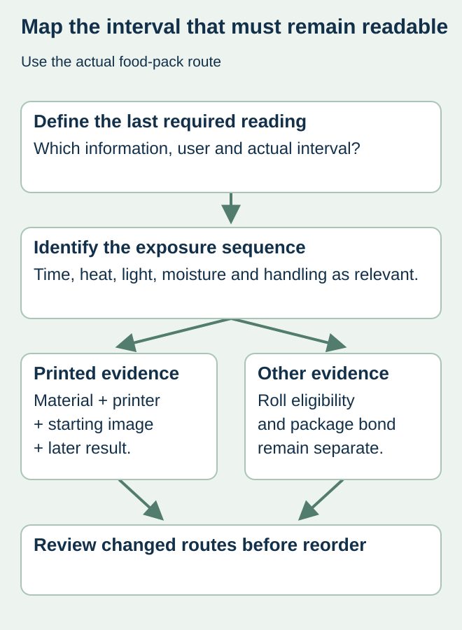

A chilled-food label stays attached and the roll is still within its stated storage period. Later, the lot image becomes difficult to read. Purchasing asks whether the adhesive expired. The more immediate distinction is between storage eligibility of unprinted stock, adhesion on the pack and the readability of an image after printing.
Specify how long the printed information must remain readable and what it encounters from printing to its last required use. Keep that image-life requirement separate from the roll’s storage dates and the adhesive’s service conditions. No one lifespan can be inferred merely from the name direct thermal.


Identify the image-forming system
Zebra’s thermal-printing explanation describes direct thermal media as heat-sensitive material that forms the image without a ribbon. It notes sensitivity to heat, light and abrasion, with possible fading or darkening. That general explanation is not a lifetime rating for any offered food-label stock. Obtain material-specific information and relevant package evidence.
A top-coated or otherwise specialized material should be identified precisely if offered. Do not assume that every direct thermal paper has the same resistance, or extend a product-specific low-temperature or durability claim to the entire category. The printing method alone also does not establish food-contact suitability.
Build an image-life route instead of asking for a universal number
| Stage | What the food business identifies | Evidence question |
|---|---|---|
| Printing | Actual printer, material and approved data | Is the starting image acceptable and traceable? |
| Application | Container and surface state | Does the supplied construction apply as intended? |
| Distribution/display | Known time, light, heat and handling route | Does the printed image remain useful through these conditions? |
| Last required reading | Operational or consumer information need and interval | What readability or code criteria must still be met? |
| Retained record | Identified specimen and relevant storage | Does a retained sample represent the distributed exposure? |


Compare the right observation over time
Use identified printed samples and an agreed evaluation plan with the responsible material, printing and quality owners. Preserve an initial reference and document the exposure represented by later observations. A photograph of a retained sample kept in a drawer does not establish what happened to labels under a shop light or another actual route.
For a hypothetical prepared-food pack, the human-readable date may remain visible while code contrast or fine features change. The relevant owner should define the required observation or verification for each field. A quick phone scan at the time of printing is not proof of readability at the end of the required interval.
Treat material and method changes as proposals with consequences
A supplier might propose another direct thermal material, a different protective arrangement or thermal transfer where a supported workflow exists. Compare the actual evidence, printer compatibility, preparation and use conditions. Do not guarantee that changing method automatically solves wet handling, rubbing or adhesion.
The printing-method guide addresses that hardware and supply decision. The roll-history guide addresses eligibility before use. This article addresses the separate life of the actual printed information on the food package.
Release the data and the physical image together
The food business still owns the approved lot/date content and its meaning. Image-life qualification does not calculate a food shelf life or authorize changing a date. Keep the accepted data format, material, printer and sample evidence linked to the production file and operating record.
If the route or required interval changes, ask whether the previous image evidence still represents it. A repeat order with the same label size and artwork can have a different reading requirement when distribution, display or retention changes. Record that difference before calling the stock suitable.
Discuss the unresolved label requirement
Send the food-pack and thermal-material references, printer, required readable interval and actual exposure sequence. Include any material data and identified printed samples rather than assuming a general lifespan. Prepare a label specification inquiry. The contact page opens an email draft and lists email or WhatsApp for attachments. Supply, proof options, testing, pricing and timing require project confirmation.